Partie Conception 1ère année :
Introduction :
Nous allons maintenant aborder la seconde partie du cours. L'objectif de celle-ci est de concevoir des bases de données.
Au départ d'un énoncé, nous allons rechercher les entités-clé et les modéliser sous forme d'un schéma appelé Diagramme de Structure de Données (DSD).
La conception de base de données est une démarche qui permet de réfléchir aux données afin de mémoriser finement l'information. Ceci nous permet :
- de mettre en évidence chaque entité et ses attributs, de manière à éviter la redondance,
- de définir une information unique qui permet d'identifier chaque entité,
- de préciser ce que contient chaque attribut, et d'éviter d'y placer des "choses" différentes,
- d'établir et de formaliser les relations entre les entités,
- de questionner plus précisément la base de données.
Nous allons brièvement revoir la démarche que nous avions suivie pendant la première partie du cours pour évoluer d'une base de données contenant une seule table "albums" vers une base de données en contenant quatre : éditeurs, albums, auteurs et participations.
Ceci nous permettra d'introduire les contraintes d'intégrité et de passer en revue les concepts de clé primaire et de clé étrangère.
Nous verrons ensuite, dans le détail, les différents modèles de relations qui peuvent exister entre les tables et nous illusterons le problème de la prise en compte du temps dans les relations.
Nous donnerons, dans la foulée, les consignes pour organiser lisiblement le DSD.
Enfin, nous aborderons les tables spécialisées et les étapes de développement d'une application.
Nous terminerons cette partie du cours en évoquant la problématique de sauvegarde des données. La conception d'une DB exigeant que l'on chasse la redondance au maximum, nous pourrions entrevoir le concept de la normalisation dont on en reparlera dans la troisième partie du cours.
Rappels :
-
bd1.albums :
Dans la partie 1 (SQL), nous étions partis d'un exemple pour gérer les données des albums de bandes dessinées.
Nous avions créé une table albums correspondant à l'entité albums; chaque album dispose d'une information unique d'identification : le numéro isbn et les attributs suivants : titre, série, sénariste, coloriste, éditeur, pays d'édition, année d'édition et prix.
CREATE TABLE bd1.albums ( isbn CHAR (13) PRIMARY KEY, titre CHARACTER VARYING (50) NOT NULL, serie CHARACTER VARYING (20), scenariste CHARACTER VARYING (20), dessinateur CHARACTER VARYING (20), coloriste CHARACTER VARYING (20), editeur CHARACTER VARYING (20) NOT NULL, pays CHARACTER (1), annee_edition INTEGER, prix DOUBLE PRECISION NOT NULL, );Dans notre notation DSD, cela donne :
Les clés primaires (PRIMARY KEY) sont soulignées. On indique la mention 'PK'.
Les champs obligatoires (NOT NULL) sont indiqués 'NN'.
bd1.albums PK isbn titre NN
serie
scenariste
dessinateur
coloriste
editeur NN
pays
annee_edition
prix NN
Quelles étaient les contraintes de ce modèle ?
- Le pays d'édition dépend de l'éditeur et non de l'album.
-
Le nom et le pays de l'éditeur sont répétés pour chaque album. Cette répétition peut entraîner les problèmes suivants :
- Risque d'erreur : le nom de l'éditeur n'est pas toujours orthographié de manière correcte, il peut être écrit de manière différente (majuscule/minuscule).
- Il faut modifier le nom dans tous les albums, si la société change de nom,
- Risque d'incohérence : le pays de l'éditeur peut être différent d'un album à l'autre...
- Les mêmes problèmes peuvent se produire pour le nom du scénariste, du dessinateur et du coloriste,
- Un album ne peut avoir qu'un seul scénariste, qu'un seul dessinateur, qu'un seul coloriste.
-
bd2.albums :
Afin de solutionner les deux premiers problèmes (relatifs à l'éditeur), nous avons introduit une seconde entité : éditeurs. Une relation permet ensuite de joindre un éditeur à chaque album.
L'éditeur est identifié par un numéro unique. Il a des attributs nom et pays comme dans la solution bd1.albums auxquels nous avons ajouté un attribut adresse.
Dans la base de données, nous avions ajouté une table editeurs à laquelle faisait référence la table albums.
La nouvelle DB se présentait comme suit :
On indique la mention 'FK' à droite des clés étrangères (FOREIGN KEY).

Cela permet également de mémoriser des informations sur des éditeurs qui n'ont pas (encore) édités d'album.
Le lien entre les deux tables est assuré par une clé étrangère dans albums faisant référence à editeurs.
-
bd3.albums :
Ensuite, nous avons affiné le modèle pour résoudre les deux problèmes restants :
- nom des scénariste, dessinateur et coloriste répété à chaque album,
- limitation à un seul scénariste, dessinateur ou coloriste par album.
Était-il intéressant de créer trois scénaristes, dessinateurs et coloristes ? Non, cela aurait également introduit une duplication des données. Une même personne pouvant occuper chacun des rôles pour un même album ou pour des albums différents.
Nous avons donc introduit une entité auteurs et créé une table auteurs dans laquelle chaque auteur sera référencé.
Comme un auteur peut participer à plusieurs albums et qu'un album peut avoir plusieurs auteurs, nous avons introduit une table intermédiaire notée ici participations.
La table participations indique quel auteur intervient dans quel album. Il y a 3 types d'intervention possible matérialisée dans le champ participe : 's' pour scénariste, 'c pour coloriste et 'd' pour dessinateur.
Un tuple de participation est identifié par le numéro de l'auteur, l'ISBN de l'album et le rôle joué par l'auteur dans cet album.
Les 3 champs de participations ne peuvent donc jamais être NULL.

Ce modèle permet donc, comme le second :
- de mémoriser des informaions propres aux éditeurs, sans devoir les répéter à chaque album édité.
- de mémoriser des informations sur des éditeurs qui n'ont pas (encore) édité d'album.
Mais, en plus,
- de mémoriser des informations propres aux auteurs, sans devoir les répéter à chaque album édité.
- de mémoriser des informations sur des auteurs qui n'ont pas encore participé à un album.
- d'avoir plusieurs scénaristes, dessinateurs ou coloristes pour un même album.
Exemple de contenu des tables :
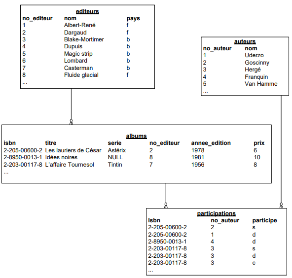
Les contraintes d'intégrité :
Nous avons défini des clés primaires et des clés étrangères dans nos bases de données. Elles assurent la cohérence de la base de données. Nous allons voir par quels mécanismes.
-
La clé primaire :
Une clé primaire doit identifier chaque tuple d'une table de façon non ambiguë. C'est un identifiant unique et non nul. Cette contrainte d'intégrité permet de s'assurer de l'unicité d'un enregistrement pour une table.
Lorsqu'une entité dispose naturellement d'un identifiant unique, cet identifiant unique peut êtrechoisi comme clé primaire. Le numéro isbn peut être la clé primaire de la table albums.
Lorsqu'une entité ne dispose d'aucun identifiant unique ou par choix, on choisit un numéro auto incrémenté. Un numéro séquentiel unique est la clé primaire de la table editeurs.
Dans la table participation, la clé primaire est une concaténation de troischamps : isbn, num_auteur et participe qui permettent d'identifier de manière unique la participation d'un auteur à un album via son rôle.
-
La clé étrangère :
L'intégrité référentielle garantit la cohérence des références entre tables.
Pour chaque information d'une table A qui fait référence à une information d'une table B, l'information référencée existe dans la table B.
Les contraintes d'intégrité référentielle garantissent donc la cohérence de la base de données.
Elles précisent les conditions dans lesquelles peuvent être ajoutés ou supprimés des enregistrements dans une table lorsqu'il existe des relations entre cette table et d'autres tables par l'intermédiaire de clés étrangères.
Cela signifie que :
-
Un 'enfant' ne peut référer un 'parent' que s'il existe.
- Le SGBD interdira d'ajouter un album si l'éditeur n'est pas enregistré dans la table editeurs.
- La contrainte interdira d'ajouter une participation si l'auteur et l'album ne sont pas préalablement inscrits dans la base de données.
-
Un 'parent' ne peut pas être supprimé s'il laisse des 'orphelins'.
- La contrainte interdira l'effacement d'un éditeur, tant que dans la base de données il existera au moins un album se référant à cet éditeur.
- Elle interdira de supprimer un auteur ou un album tant qu'il existera des participations pour cet auteur ou cet album.
Notons également que si la clé primaire est composée de plusieurs champs, il en sera forcément même pour les clés étrangères.
CREATE TABLE table1 ( cle_partie1 CHAR (4) NOT NULL, cle_partie2 CHAR (3) NOT NULL, ..., PRIMARY KEY (cle_partie1, cle_partie2), ); CREATE TABLE table2 ( cle_table2 INTEGER PRIMARY KEY, cle_etrangere_partie1 CHAR (4) NOT NULL, cle_etrangere_partie2 CHAR (3) NOT NULL, ..., FOREIGN KEY (cle_etrangere_partie1, cle_etrangere_partie2) REFERENCES table1 (cle_partie1, cle_partie2), ); -
La représentation d'un schéma :
-
Conventions :
Pour représenter un schéma, nous utilisons les conventions suivantes :
- Utiliser des noms de table entièrement en minuscules.
- Utiliser des noms de table au pluriel.
- Utiliser des noms de champs entièrement en minuscules.
- Utiliser "_" (underscore) pour séparer les mots.
- Ne mettre aucun caractère accentué dans les noms de table et de champ.
- Souligner la clé primaire et indiquer PK à gauche.
- Indiquer le mot-clé FK entre () à côté d'une clé étrangère.
- Indiquer NN pour les champs NOT NULL.
- Respecter le vocabulaire métier (le vocabulaire de l'énoncé).
- Vérifier la cohérence des clés étrangères (FK) et des relations.
- Mentionner le mot-clé unique lorsque cela est nécessaire.
- Mentionner les énumérés entre {}.
Graphiquement, une table est représentée de la sorte :
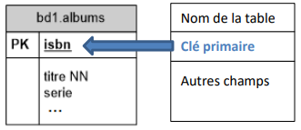-
Lorsqu'un seul champ compose la clé primaire, il est indiqué uniquement dans l'espace réservé à cet effet.
Cela correspond au CREATE TABLE :
CREATE TABLE bd1.albums ( isbn CHAR (13) PRIMARY KEY, titre CHARACTER VARYING (50) NOT NULL, serie CHARACTER VARYING (20), ... ); -
Lorsque plusieurs champs composent la clé primaire, leur concaténation est indiquée dans l'espace réservé à cet effet et chaque champ est repris avec ses propriétés dans la liste des champs.
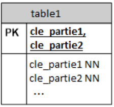Cela correspond au CREATE TABLE :
CREATE TABLE table1 ( cle_partie1 CHAR (4) NOT NULL, cle_partie2 CHAR (3) NOT NULL, ..., PRIMARY KEY (cle_partie1, cle_partie2), ); -
Lorsqu'un seul champ compose la clé étrangère, le mot-clé FK est indiqué immédiatement derrière ce champ.
Cela correspond au CREATE TABLE :
CREATE TABLE bd3.albums ( isbn CHAR (14) PRIMARY KEY, titre CHARACTER VARYING (50) NOT NULL, serie CHARACTER VARYING (20), num_editeur INTEGER NOT NULL REFERENCES bd3.editeurs (num), ... ); -
Lorsque plusieurs champs composent la clé étrangère, chaque champ est repris avec ses propriétés dans la liste des champs et leur concaténation est ensuite indiquée avec le mot-clé FK.
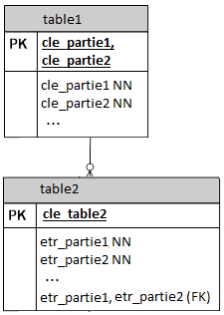Cela correspond au CREATE TABLE :
CREATE TABLE table1 ( cle_partie1 CHAR (4) NOT NULL, cle_partie2 CHAR (3) NOT NULL, ..., PRIMARY KEY (cle_partie1, cle_partie2), ); CREATE TABLE table2 ( cle_table2 INTEGER PRIMARY KEY, etr_partie1 CHAR (4) NOT NULL, etr_partie2 CHAR (3) NOT NULL, ..., FOREIGN KEY (etr_partie1, etr_partie2) REFERENCES table1 (cle_partie1, cle_partie2), ); -
De la même manière, lorsqu'un champ est unique, le mot-clé unique est indiqué immédiatement après ce champ. Lorsque la concaténation de plusieurs champs est unique, chaque champ est repris avec ses propriétés dans la liste des champs et leur concaténation est ensuite indiquée avec le mot-clé unique. Dans l'exemple ci-dessous, on remarque que le mot-clé unique est combiné avec le mot-clé FK.
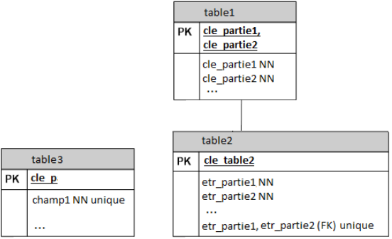Cela correspond au CREATE TABLE :
CREATE TABLE table1 ( cle_partie1 CHAR (4) NOT NULL, cle_partie2 CHAR (3) NOT NULL, ..., PRIMARY KEY (cle_partie1, cle_partie2), ); CREATE TABLE table2 ( cle_table2 INTEGER NOT NULL, etr_partie1 CHAR (4) NOT NULL, etr_partie2 CHAR (3) NULL, ..., FOREIGN KEY (etr_partie1, etr_partie2) REFERENCES table1 (cle_partie1, cle_partie2), UNIQUE (etr_partie1, etr_partie2), );
-
L'organisation graphique du DSD :
Certaines règles simples permettent de structurer le dessin pour qu'il devienne un support fiable à la conception.
- On placera en haut (à la périphérie) du dessin les entités les plus indépendantes et en bas (au centre) du dessin les entités les plus dépendantes. Généralement, les entités les plus dépendantes sont les plus volumineurses et les plus mouvementées. Souvent on descend vers les tables volumineuses.
- On évitera de croiser les relations. Il faut éviter les schémas spaghetti ou jeu de piste.
- Pour les schémas très importants, on peut utiliser des couleurs différentes pour mettre en valeur des tables de natures différentes ou utilisées dans différentes applications.
- On peut également créer plusieurs schémas en reprenant les tables communes.
Les relations :
-
Cas classique : relation 1 à 0 : N :
Un client peut passer plusieurs commandes d'articles. Un client est identifié par un numéro unique de client. Ce numéro peut être fourni par le système(un champ auto incrémenté par le SGBD) par un programme ou encore par l'utilisateur. On ajoutera plusieurs champs : le nom, l'adresse, le numéro de téléphone, ...
Une commande est identifiée par un numéro de commande (clé primaire qui peut être également un numéro séquentiel ou un champ plus complexe...). On ajoutera d'autres champs pour indiquer la date de la commande, l'état (pour le suivi), et un numéro de facture (dans l'hypothèse simpliste où à une commande correspond une seule facture).
Il faut en outre faire le lient avec le client. Plutôt que de répéter les informations du client nécessaires à la commandes, on établira un lien avec la table clients en mémorisant ici le numéro du client concerné. Ce champ était une clé primaire dans la table client, c'est une clef étrangère dans la table commande (FK).
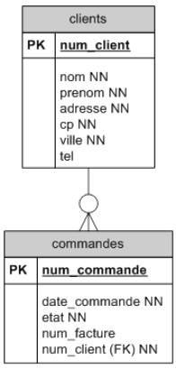Le symbole -o∊ montre une relation 1 : 0-N. Cette relation se lit dans les deux sens :
- un client a plusieurs commandes. Il peut ne pas en avoir, effectivement le symbole o indique que la relation est facultative.
- une commande est associée obligatoirement à un client.
-
Cas de la relation 1 à 1 : N :
On pourrait dire qu'un client n'est enregistré qu'au moment où il passe une première commande d'articles. Il pourra passer plusieurscommandes d'articles.
Le symbole -∊ montre une relation 1 : 1-N. Cette relation se lit dans les deux sens :
- Un client a au minimum une commande. Il peut avoir plusieurs commandes.
- Une commande est associée obligatoirement à un client.
-
Cas de la relation 1 à 0 : 1 :
Une commande peut référencer éventuellement une facture. Pour le moment, la facture est considérée comme un attribut de la commande. Envisagons la nécessité d'en créer une entité à part entière. Nous avons donc deux tables : commandes et factures.
Une commande référence éventuellement une facture. Une facture référence toujours une commande mais on ne retirnt pas cette information.
La relation est donc facultative. Dans la table commandes, la clé étrangère sera donc annotée NULL et graphiquement on ajoutera un petit rond à l'extrémité de l'association.
Le symbole -o montre une relation 1 : 0-1. Cette relation se lit dans les deux sens :
- une commande référence éventuellement une facture.
- une facture référence toujours une commande.
Cette relation peut également être représentée par une clé étrangère du côté de la facture :
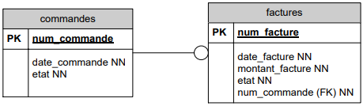Afin de s'assurer que deux ou plusieurs commandes ne référencent pas le même numéro de facture, on peut noter une contrainte d'unicité sur le champ facture (noté ici unique.
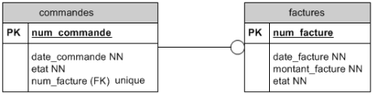Et réciproquement,
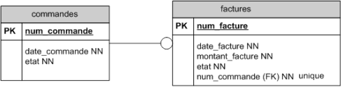 -
Cas de la relation 1 à 1 :
Si on considère qu'à chaque commande correspondra nécessairement une facture, il faut ajuster le diagramme afin de relier les tables commandes et factures avec une relation 1 à 1.
Le symbole - montre une relation 1:1. Cette relatin se lit dans les deux sens :
- une commande référence toujours une facture.
- une facture référence toujours une commande.
Pour que le SGBD puisse facilement garantir la relation 1 à 1, il est conseillé d'utiliser la même clé primaire dans les deux tables, quand c'est possible.
On utilise dans ce cas la clé primaire de la table commandes également comme clé primaire pour la table factures. Dans la table commandes, on n'indique aucun clé étrangère. Une facture ser identifiée par un numéro de commande.
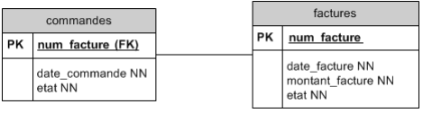→ Remarquons qu'il serait plus judicieux d'utiliser le numéro de facture qui est un élément idispensable d'une facture en bonne et due forme.

-
Autres relations entre deux tables :
On peut combiner les terminaisons de relations supportées par le SGBD.
Le symbole o-o montre une relation 0-1 : 0-1.Cette relation se lit dans les deux sens :
- une entité a référence éventuellement une entité b.
- une entité b référence éventuellement une entité a.
Le symbole o-o∊ montre une relation 0-1 : 0-N.
Le symbole o-∊ montre une relation 0-1 : 1-N.
-
Cas de la relation M à N :
Une commande peut porter sur plusieurs articles. Un article peut faire partie de plusieurs commandes.
C'est une relation M à N.

Le SGBD ne peut pas implémenter cette relation directement mais le fait par le biais de deux relations 1 : N.
Cela exige donc la création d'une nouvelle entité intermédiaire.
Concrètement, on sera obligé de créer une table pour mémoriser le fait que dans une même commande, on rencontre plusieurs articles mais qu'un même article peut, bien entendu, être commandé plusieurs fois.
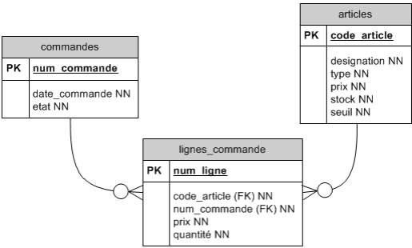
Une clé étrangère à NULL :
La clé étrangère peut être à NULL pendant un certain temps et définie par la suite.
Prenons l'exemple du carnet de rendez-vous d'un cabinet médical. Ce cabinet est composé d'une dizaine de médecins qui ont une grille de rendez-vous qui s'échelonnent toutes les demi-heures. Les médecins prestent seulement certains jours ou demi-jours dans ce cabinet et parfois de façon irrégulière.
La secrétaire encode au départ les disponibilités de chaque médecin et puis fixe les rendez-vous avec les patients sur base de celles-ci.
Évolution de la construction du DSD :
Étpae 1 : le planning :
On prévoit les disponibilités de chaque médecin :
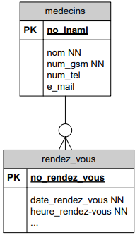Remarque : vu la convention que nous adoptons (nom d'une table toujours au pluriel), nous préférerons rendez-vous comme nom pour la table.
Étape 2 : l'introduction des patients :
Aussi longtemps que la plage du planning n'est pas attribuée à un patient, la clé étrangère num_sis de la table rendez-vous reste à NULL.
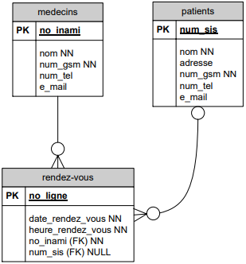Lorsqu'un patient prend le rendez-vous disponsible, la clé étrangère est indiquée. Il se pourrait que certains rendez-vous ne soient jamais attribués.
-
Influence du temps sur les clés étrangères :
Exemple : un grossiste effectue des livraisons à ses clients tout au long du mois en fonction de leurs commandes. À la fin du mois, toutes ces livraisons sont facurées en une seule fois. La facture d'un client regroupe donc toutes les livraisons effectuées à ce client durant le mois.
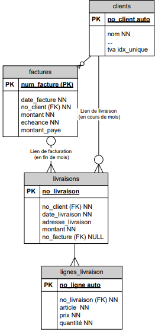Cet exemple démontre bien l'importance de nommer les relations dans certains cas. Il est une nouvelle illustration d'une clé étrangère de valeur NULL.
Entre les entités clients, il exite deux relations différentes. Celles-ci pourraient être de cardinalité différente (voir plus loin).
On peut noter que certains champs pourraient également servir d'identifiant unique. On peut en faire des index uniques (notés ici idx_unique).
Un index est une propriété d'une colonne de la base de données permettant de l'indexer dans le but d'améliorer l'accès aux données par le SGBD. Tout comme l'index dans un livrequi permet de retrouver plus facilement l'information, l'index unique impose l'unicité de l'indexation; il permet d'identifier chaque tupled'une table de façon non ambiguë.
Les relations multipkes entre tables :
-
Relations M à N :
Une table donnée peut avoir deux relations M à N avec deux tables différentes (et beaucoup si nécessaire).
Voici un DD qui illustre ce propos :
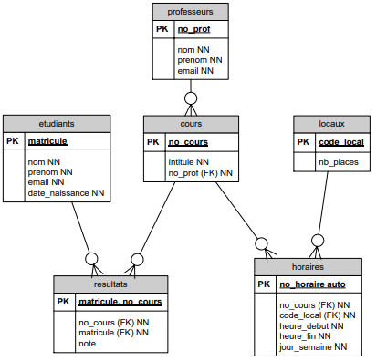La même table cours participe à deux relations M à N différentes.
- resultats donne le résultat pour un cours et un étudiant. (remarque : il serait utile de se demander comment conserver les résultats s'il y a plusieurs sesions possibles).
- horaires décrit les heures auxquelles se donne un cours dans un local.
Choix des clés primaires :
- resultats est telle que pour un cours et un étudiant on n'a qu'un seul résultat. La clé primaire est donc formée par la concaténation des deux clés étrangères.
- En ce qui concerne horaires, c'est différent; un même cours peut être donné dans un même local à des moments différents. La clé primaire est donc indépendante des clés étrangères.
-
Relations 1 à N :
Gestion des classes d'une école de l'enseignement secondaire :
Dans l'enseignement secondaire, les élèves sont regroupés par niveaux d'étude (ou années).
Une classe regroupe plusieurs élèves, en général entre 12 et 25.
Le programme de cours prévoit 32 heures de cours par élève. Outre les cours obligatoires, l'élève doit choisir et s'inscrire à des cours à option. Un cours est organisé pour minimum 8 élèves.
Un professeur donne 19 heures de cours, parfois il peut accepter de donner jusqu'à 4 heures supplémentaires, parfois il doit accepter un temps partiel.
Un cours n'est attribué qu'à un seul professeur.
Parmi les professeurs, on choisit un titulaire de classe. Il arrive qu'un professeur soit titulaire de 2 classes.
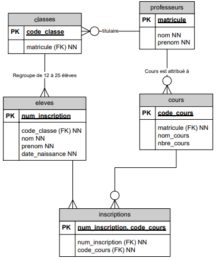Dans ce diagramme, plusieurs entités ont deux relations différentes entre elles : une classe a un professeur titulaire et un seul mais une classe a plusieurs professeurs qui lui donnent cours. Ces mêmes professeurs donnent cours à d'autre classes.
-
Relation 1 à N induite :
Si entre les entités clients et commandes, il y a une relation 1 à N et si entre les entités commandes et lignes_commande, il y a aussi une relation 1 à N, il existe alors une relation 1 à N déduite entre clients et lignes_commande. Il est inutile de la dessiner.
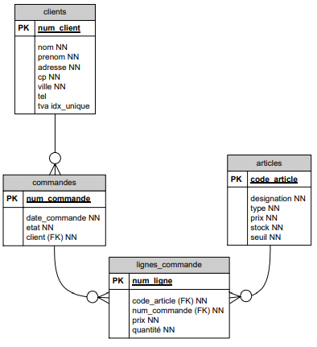
Les relations réflexives :
-
Relations réflexives hiérarchiques :
Le cas typique de ce genre de relation est la table où l'on désire mémoriser des services d'une institution organisée hiérarchiquement.
La direction comprend, entre autres, un service juridique. Celui-ci se décompose en service juridique du personnel et service juridique commercial ainsi que le contentieux. Le service juridique contentieux gère les conflits et les procès pour la Belgique et l'étranger; deux sous services sont donc créés, etc.
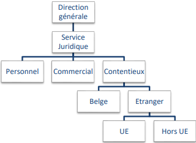Cette hiérarchie sera mémorisée comme suit : Code service Nom service Responsable du service Code service supérieur 0 Direction générale Dupuis - 1 Juridique Janssens 0 2 Personnel Durand 1 3 Commercial Carlot 1 4 Contentieux Van Camp 1 5 Belge André 4 6 Etranger Michel 4 7 UE Van den Berg 6 8 Hors UE Lee 6 Représentation :
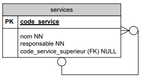 -
Relations en réseau (réflexives non hiérarchiques) :
C'est le cas typique de structure d'assemblage. Une pièce peut être composée de plusieurs pièces et une même pièce peut être un composant de plusieurs pièces.
Représentation :

Par exemple, une foreuse est composée d'un accumulateur, d'un moteur et d'un interrupteur.
Pièces : no_piece nom description B72 FACC72 Foreuse sur Accus 7.2 V modèle Brico P72 PACC72 Foreuse sur Accus 7.2 V modèle professionnel B96 FACC96 Foreuse sur Accus 9.6 V modèle Brico P96 PACC96 Foreuse sur Accus 9.6 V modèle professionnel A72 ACC72 Accus 7.2V A96 ACC96 Accus 9.6 V M72 MOT72 Moteur 7.2 V M96 MOT96 Moteur 9.6 V IP INTPROF Interrupteur Brico IB INTPROF Interrupteur Brico Composants : no_piece_composee no_piece_composante B72 A72 B72 IB B72 M72 P72 A72 P72 IP P72 M72 Dans cet exemple, on constate qu'entre le modèle bricolage et professionnel, seul l'interrupteur change.
-
Exercice proposé : le parrainage :
On désire mettre en place un système de parrainage des étudiants de 1ère et même de 2ème année par d'autres étudiants plus expérimentés (d'une année supérieure). Un étudiant pourrait demander des explications sur des matières plus difficiles à son parrain.
On souhaite mémoriser qui parraine qui.
Première hypothèse : un étudiant (parrain) pourrait parrainer plusieurs autres étudiants (ses filleuls) mais un filleul n'aurait qu'un seul parain.
Deuxième hypothèse : un filleul pourrait avoir plusieurs parrains plus ou moins spécialisés suivant les matières en question.
Pour chaque hypothèse, construisez une DB (DSD) et écrivez un SELECT SQL.
- Qui affiche pour chaque parrain (matricule et nom) le nombrede ses filleuls.
- Qui affiche pour chaque parrain (matricule et nom) le matricule et le nom de ses filleuls.
DSD de la première hypothèse :
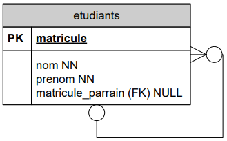DSD de la deuxième hypothèse :
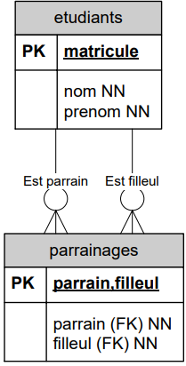
Les tables spécialisées :
Partons d'une table décrivant les articles vendus par une société :
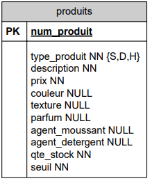Le champ type_produit de la table produits contient le char 'S' pour savon, 'D' pour détergent et 'H' pour shampoing.
Les autres champs de cette table sont remplis selon le type de produits :
- S'il s'agit d'un savon, les champs couleur, texture et parfum seront remplis,
- S'il s'agit d'un shampoing, le champ agent_moussant sera rempli,
- Enfin, s'il s'agit d'un détergent, le champ agent_detergent sera rempli.
Dans le cas d'un savon par exemple, les champs agent_moussant et agent_detergent resteront vides (NULL). En fait, suivant le type de produit, l'enregistrement devrait avoir une structure différente.
Une solution plus claire est de définir 3 tables spécialisées (une par type de produits) en plus de la table générale des produits.
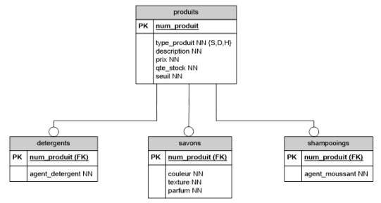Dans cet exemple, un produit est soit un savon, soit un shampoing, soit un détergent. Nous allons donc créer :
- un tuple dans la table produits pour tous les produits (savons, shampoings et détergents) ET
-
un tuple dans la table correspondant au type_produit :
- Si 'S', dans la table savons;
- Si 'D', dans la table detergents;
- Si 'H' dans la table shampoings.
La clé primaire des tables spécialisées est la même que la clé primaire de la table générale.
Cependant, il peut arriver que des clés primaires différentes existent. C'est ce que nous allons voir dans l'exemple suivant.
Au service central d'une université, on décide d'enregistrer toues les membres de l'université dans une seule table personnes, spécialisée en deux tables etudiants et professeurs. Les professeurs sont identifiés par un numéro de matricule tandis que les étudiants sont identifiés par leur numéro d'inscription.
Voici deux manières de représenter cette situation :
Solution 1 :
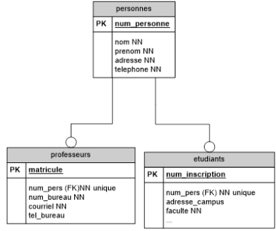Solution 2 :
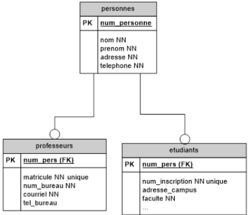Une personne peut être présente dans les deux tables spécialisées. Dans cette université, certains étudiants de doctorat ont déjà des charges académiques et sont donc considérés à la fois comme des étudiants et comme des professeurs.
La sauvegarde des données :
La sauvegarde est l'opération qui consiste à mettre en sécurité les données contennues dans un sytème informatique. Ce terme est proche de deux notions :
- l'enregistrement des données, qui est l'opération d'écriture des données sur un item d'enregistrement durable, tel qu'un disque dur, une clé USB, des bandes magnétiques, etc. (back up)
- l'archivage, qui consiste à enregistrer des données sur un support à des fins légales ou historiques.
-
Le back up :
Les copies de sûreté sont utiles principalement à deux choses :
- La première et la plus évidente est de permettre de restaurer un système informatique dans un état de fonctionnement à la suite d'un incident (perte d'un support de stockage tel que disque dur, bande magnétique, etc., ou de tout ou partie des données qu'il contient).
- La seconde, incluse dans la première mais certainement la plus courante, est de faciliter la restauration d'une partie d'un système informatique (un fichier, un groupe de fichiers, un système d'exploitation, une donnée dans un fichier, etc.) à la suite d'une suppression accidentelle ou à une modification non désirée.
La technique la plus fréquente est la copie des données sur un support indépendant du système initial (serveur distant, bandes magnétiques...).
L'opération inverse qui consiste à réutiliser des données sauvegardées s'appelle une restauration.
-
L'archivage :
L'archivage vise à désengorger des tables de mouvements, souvent volumineuses et rapidement périmées.
Pour des raisons légales ou pour répondre à des demandes de statistiques, les données sont conservées plus longtemps. On stocke alors les données dans une DB séparée ou dans un data warehouse (Big data; business intelligence (informatique décisionnelle)).
Exercices :
-
Théâtre du TRAC :
-
Partie 1 :
Le théâtre du trac organise une douzaine de spectacles chaque saison. Chaque spectacke est identifié par un code mnémonique de 4 caractères et pour chacun, on mémorisera le titre et le prix des places A (proches de scène, les plus chères) et le prix des places B (moins chères). Le prix de ces deux catégories de places varie suivant le spectacle.
Chaque spectacle est joué un certain nombre de fois dans une saison : ce sont les représentations. Il n'y a qu'une représentation par jour par spectacle. Par représentation, on désire mémoriser le nombre de places vendues en distinguant les places A et B. À la fin de chaque représentation, on enregistra ces nombres. Un certain nombre de places gratuites sont distribués essentiellement aux journalistes. Un invité doit présenter sa carte d'invitation. Après chaque représentation, on comptera le nombre d'invitations.
- On désire connaître le montant des recettes, en distinguant chaque spectacle ainsi que les places A et B. On indiquera également le nombre d'invitations.
- On désire également connaître le montant total des recettes par jour de la semaine (du lundi au dimanche). Une fonction SQL permet d'extraire le jour de la semaine d'une date : date_part(isodow, une_variable_de_type_date). Cette fonction renvoie 1 pour lundi, 2 pour mardi, etc.
date_part est une fonction qui extrait de l'information dans un attribut de type timestamp. Cette fonction prend deux paramètres : le premier pour préciser le type d'information à extraire (weekday, month, year, hour, minute,...) et le second est l'attribut de type timestamp. Cette fonction renvoie un entier. Supposons une variable une_date = '2001-02-16 20:38:40', SELECT date_part ('hour', une_date) renvoie 20 ou encore SELECT date_part ('isodow', timestamp '2001-02-16 20:38:40') renvoie 5 (vendredi).
On vous demande :
- de dessiner le DSD et de spécifier clairement toutes les relations ainsi que les clés primaires et étrangères.
- d'écrire les CREATE TABLE.
- de fournir des exemples de données contenues dans les tables. On désire 3 spectacles et 4 représentations dont deux pour un même spectacle.
- d'écrire les deux queries répondant aux pointsa et b ci-dessus (en fin de saison, toutes ces données sont archivées et le programme de la nouvelle saison est introduite dans la DB).
-
Partie 2 :
Très content(e) de votre analyse, le théâtre du trac, vous demande un outil de gestion de ses dépenses. Les dépenses sont réparties par postes : costumes, décors, mise en scène, comédiens, régisseur, etc. Le nombre des postes utilisés peut varier d'un spectacle à l'autre mais la majorité de ces postes sont repris dans chaque spectacle. Voici un exemple de budget : il est valable pour une saison.
Spectacle Marivaux :
Comédiens 20.000
Mise à en scène 2.000
Décors 9.500
Costumes 1.000
Total 32.500
Spectacle Brecht :
Comédiens 5.000
Mise en scène 2.000
Décors 1.500
Costumes 1.000
Éclairages 1.200
Total 10.700
Au début de chaque saison, le programme de la nouvelle saison est mis sur pied. Pour chaque spectacle, le directeur établit un budget, c'est-à-dire une prévision des dépenses, poste par poste. Au cours de la saison, le théâtre reçoit des factures (du costumier, des décorateurs...) paie le metteur en scène, les comédiens. Attention, pour un poste donné d'un spectacle, il peut recevoir plusieurs factures mais une facture ne concerne qu'un seul spectacle. Le directeur enregistre pour chaque dépense à quel spectacle et à quel poste il doit l'attribuer. Une dépense ne peut êre affectée qu'à un poste prévu dans le budget. Dans une première version, un champ dépense sera ajouté, à côté de buget et sera augmenté à chaque ajout de facture.
À la fin de la saison, le directeur voudrait imprimer le résultat suivant (une présentation moins élégante sera acceptée).
Spectacle Poste Budget Dépense Différence Spectacle Marivaux Comédiens 20.000 18.000 -2.000 Mise en scène 2.000 1.800 -200 Décors 9.500 12.000 +2.500 Costumes 1.000 2.000 +1.000 Spectacle Brecht Comédiens 5.000 7.000 +2.000 Mise en scène 2.000 2.000 0 Décors 1.500 1.500 0 Costumes 1.000 800 -200 Éclairages 1.200 1.250 +50 On vous demande d'adapter votre DSD et de résoudre le query qui permet de réaliser le rapport ci-dessus.
-
Partie 3 :
Le directeur voudrait maintenant pouvoir mémoriser toutes les factures cachées pour le moment derrière l'attribut dépense. Pour chaque facture, on mémorisera son numéro, la date de facturation, la date d'échéance ainsi que le montant de la facture. On enregistre les factures liées à des budgets de dépense prévu pour un poste d'un spectacle.
On vous demande de modifier le DSD et d'adapter les 3 queries déjà écrits.
Finalement, écrivez le query qui permet d'afficher la liste des factures reçues (le numéro de la facture, le titre du spectacle, la date de la facture ainsi que le libelle du poste) triées par poste de dépense et puis par date.
-
Bonus :
Que faut-il changer à votre DSD pour permettre l'encodage de factures non liées à un budget prévu ?
CREATE TABLE postes ( code_poste INTEGER PRIMARY KEY, libelle VARCHAR (50) NOT NULL ); CREATE TABLE spectacles ( code_spectacle CHAR (4) PRIMARY KEY, titre VARCHAR (50) NOT NULL, prix_a DOUBLE PRECISION, prix_b DOUBLE PRECISION ); CREATE TABLE representations ( code_spectacle CHAR (4) NOT NULL REFERENCES spectacles (code_spectacle), date_representation DATE NOT NULL, nbre_places_a INTEGER, nbre_places_b INTEGER, nbre_invitations INTEGER, PRIMARY KEY (code_spectacle, date_representation) ); CREATE TABLE budget_depenses ( code_spectacle CHAR (4) NOT NULL REFERENCES spectacles (code_spectacle), code_poste INTEGER NOT NULL REFERENCES postes (code_poste), budget DOUBLE PRECISION NOT NULL, depenses DOUBLE PRECISION, PRIMARY KEY (code_spectacle, code_poste) ); CREATE TABLE factures ( no_facture INTEGER PRIMARY KEY, code_spectacle CHAR (4) NOT NULL, code_poste INTEGER NOT NULL, date_facure DATE NOT NULL, date_echeange DATE NOT NULL, montant DOUBLE PRECISION NOT NULL, FOREIGN KEY (code_spectacle, code_poste) REFERENCES budget_depenses (code_spectacle, code_poste) );spectacles : code_spectacle titre prix_a prix_b A31C Cyranno de Bergerac 8 7 3F-1 Le malade imaginaire 8.5 8 @B3| Le magicien d'Oz 3.75 3.01 representations : code_spectacle date_representation nbre_places_a nbre_places_b nbre_invitations A31C 12/03/2016 20 45 12 3F-1 22/04/2016 30 47 10 @B3| 12/03/2016 27 60 15 3F-1 23/04/2016 19 32 17 -
SELECT SP.code_specyacle, SUM (SP.prix_a * RE.nbre_places_a), SUM (SP.prix_b * RE.nbre_places_b), SUM (RE.nbre_invitations) FROM spectacles SP, representations RE WHERE SP.code_spectacle = RE.code_spectacle GROUP BY SP.code_spectacle; -
SELECT date_part('isodow', RE.date_reprsentation) AS "date", SUM (SP.prix_a * RE.nbre_places_a) + SUM ( SP.prix_b * RE.nbre_places_b) AS "montant total" FROM spectacles SP, representations RE WHERE SP.code_spectacle = RE.code_spectacle GROUP BY date; -
SELECT SP.titre, PO.libelle, BD.depenses, (BD.budget - BD.depenses) AS "différence" FROM spectacles SP, postes PO, budget_depenses BD WHERE SP.code_spectacle = BD.code_spectacle AND PO.code_poste = BD.code_poste GROUP BY SP.titre, PO.libelle; -
SELECT FA.no_facture, SP.titre, FA.date_facture, PO.libelle FROM factures FA, spectacles SP, postes PO, budget_depenses BD WHERE FA.code_poste = BD.code_poste AND FA.code_spectacle = BD.code_spectacle AND BD.code_poste = PO.code_poste AND BD.code_spectacle = SP.code_spectacle ORDER BY PO.libelle, FA.date_facture;
-
-
La gestion de projets :
Une société de software voudrait un outil pour planifier les projets qu'elle doit développer et s'adresser à vous.
Un projet est identifié par un numéro. On mémorise pour chaque projet le titre (ex: filmothèque), le nom du client, une date d'échéance et un montant. Un projet peut aussi être identifié par son titre.
La première phrase du paragraphe précédent nous indique que le numéro du projet peut nous servir de clé primaire.
Comme on peut identifier un projet par son titre, cela signifie qu'il ne peut pas y avoir deux fois le même titre, ce qu'indique la contrainte unique. Cependant, dans la mesure où cela sera une chaîne de caractères de longueur variable, cela ne constituerait pas une clé primaire acceptable.
Remarque : Les champs titre et nom_client doivent d'office être NOT NULL. Pour ce qui est de l'échéance et du montantnt prévu, cela dépend de si on ajoute un projet dans la table dès qu'il y a une demande d'un client (avant estimation du temps nécessaire et du montant) ou après que le client a accepté le contrat. Comme on n'a pas de champ indiquant si le projet a été annulé ou non, on part plutôt de la deuxième hypothèse. Cependant, la première est aussi acceptable. Cependant, il faut être cohérent et soit les deux peuvent être null, soit aucun des deux.
La société se compose d'une vingtaine d'analystes-programmeurs. Pour chacun d'eux, on mémorise son matricule, son nom, son prénom, son GSM et son email. Cette dernière information doit également permettre de retrouver les analystes-programmeurs. Le GSM et l'email peuvent être modifiés.
Un matricule est, par définition, un identifiant et ayant un format précis (nombre fixe de caractères). Il peut donc servir de clé primaire.
Même si on aurait tendance à dire qu'un numéro de GSM ne correspond qu'à une seule personne et donc qu'il ne peut pas y avoir de doublon, rien, dans l'énoncé, n'indique que c'est le cas.
L'email doit être unique car il doit permettre d'identifier un analyste-programmeur. Il ne peut toutefois pas servir de clé primaire car il est modifiable.
Remarque : S'agissant des informations des analystes-programmeurs de la société, elles sont toutes connues (GSM et email pouvant être fournis par la société).
En début de projet, une découpe en composants est effectuée. Chaque composant a un descriptif et passe par une série d'étapes succcessives : l'étape d'analyse (A), l'étape de conception (C), l'étape de programmation (P), l'étape de tests (T) et l'étape de maintenance (M). Chaque composant est sous la responsabilité d'un seul analyste-programmeur. Chaque composant comprendra également un temps présumé qui sera fonction de la difficulté de celui-ci et l'expérience de l'analyste-programmeur qui en est responsable. Pour chaque composant, on pourra également préciser une date de début et une date de fin des tests.
L'étape ne peut prendre que certaines valeurs (qui ne varient pas dans le temps). C'est pourquoi on trouve ici une énumération. Comme les valeurs sont des caractères (on a choisi de mettre uniquement la première lettre de l'étape mais on aurait pu mettre les noms complets), il ne faut pas oublier de les mettre entre '...'.
- Un projet peut être découpé en plusieurs composants mais un composant appartient à un seul projet (ce qu'indique le NN pour la clé étrangère et la relation 1:N). Un projet peut ne pas encore avoir de composant si la découpe n'a pas encore été faite.
- Un composant est attribué à un seul analyste-programmeur (le responsable) mais un analyste-programmeur peut avoir la responsabilité de plusieurs composant (éventuellement 0 si un analyste-programmeur vient d'être engagé a déjà été ajouté dans la base de données).
Remarques :
- La dernière phrase du paragraphe nous indique que les champs date_debut_test et date_fin_test n'ont pas nécessairement une valeur et doivent, par conséquent, pouvoir être null. Les autres champs ne peuvent pas être null. D'autre part, la présence d'une énumération ou d'une clé étrangèrene signifie pas que le champ ne peut pas être null. Il faut encore bien ajouter la contrainte NN, si nécessaire, pour ces champs-là.
- Quand il n'y a pas de champs pouvant constituer la clé primaire, on doit en ajouter un. Par convention, on le nomme id_... On évite d'utiliser le mot "numero" ou "code" si l'entité ne possède pas (selon la demande) ce type de champ.
À la fin de chaque journée, chaque analyste-programmeur note son emploi du temps, c'est-à-dire le temps qu'il a consacré à chacun des composants dont il est responsable. Un analyste-programmeur ne peut consacrer du temps qu'à un composant répertorié : il n'y a pas de composant détaché d'un projet (du style "boire du café"). Quand un analyste-programmeur a terminé une des étapes de développpement d'un composant, il le fait passer à l'étape suivante. Quand l'étape d'analyse est finie, le composant passe l'étape de conception; une fois cette dernière terminée, le composant passe à l'étape de programmation. Enfin, quand les tests sont achevés, le composant passe à l'étape de maintenance.
- Les informations étant entrées en fin de journée, elles sont toutes connues.
- Pour la clé primaire, si on suppose qu'on ne peut entrer qu'une durée par composant par jour, on pourrait utiliser une PK concaténér (id_composant, date_emploi_du_temps). Par contre, s'il veut encoder deux emplois du temps pour un même jour pour un composant pour montrer qu'il y a travaillé à deux momentsdifférents, alors aucun champ ne peut constituer la clé primaire.
- La partie concernant le passage d'un composant d'une étape à l'autre ne peut se traduire dans un DSD. C'est une information qui sera plutôt destinée au programmeur lorsqu'il devra développer l'application.
- Réaliser le diagramme de structure de données de l'application.
- Fournissez des exemples de données contenues dans les tables (au moins deux projets, trois analystes,...).
-
Écrivez les requêtes permettant de répondre ci-dessous :
- Pour chaque projet et pour chaque composant, donnez le nombre d'heures prévues et le nombre d'heures déjà réalisées et l'étape en cours.
- Donnez, pour chaque analyste-programmeur, son nom, son matricule et le nombre d'heures travaillées durant le mois de janvier 2016.
- Donnez, pour chaque projet, son numéro, son titre, le nombre de composants qu'il comporte et le nombre de composants qui sont à l'étape maintenance.
BONUS : Parfois un analyste-programmeur consacre du temps à un projet mais ce temps n'entre en compte dans aucun composant de celui-ci. Comment adapter le DSD pour répondre à ce problème ?
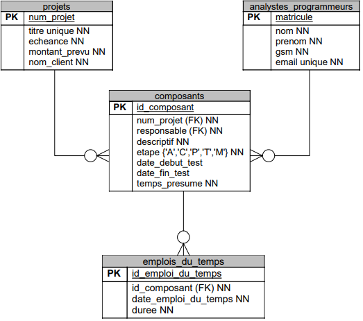Exemple de données :
Remarque : on a mis des données uniquement pour les colonnes utiles pour les requêtes. De plus, on a choisi des valeurs permettant d'illustrer ces mêmes requêtes et non des valeurs réalistes.
projets : num_projet titre echeance montant_prevu nom_client 2 Bibliothèque 2020-10-31 ... ... 5 Gestion d'une école 2021-04-21 ... ... analystes_programmeurs : matricule nom prenom gsm email 1969061445 Dupont ... ... ... 1981042125 Peeters ... ... ... 1964030214 Vandeuren ... ... ... composants : id_composant num_projet responsable descriptif etape temps_presume ... ... 1 2 1969061445 Gestion des livres P 30 2 5 1981042125 Module comptable A 80 3 2 1964030214 Abonnements A 20 4 5 1969061445 Gestion des étudiants M 15 5 5 1969061445 Gestion du personnel P 50 6 5 1981042125 Module délibération C 30 emploi_du_temps : id_emploi_du_temps id_composant date_emploi_du_temps duree 1 4 2015-12-28 7 2 4 2016-01-05 4 3 6 2016-01-05 3 4 1 2016-01-05 5 5 3 2016-02-25 6 6 4 2016-02-25 7 7 6 2016-02-25 4 Remarque : Lorsqu'on donne des données, il faut veiller à la cohérence. Par exemple :
- Dans la table composants, les numéros de projet indiqués doivent être dans la table projets et les matricules des responsables doivent être dans la table analystes_programmeurs.
- Il ne peut y avoir deux fois le même titre dans la table projets, ni deux fois le même email dans la table analystes_programmeurs.
- Si une donnée est requise (NN), il faut lui mettre une valeur.
- ...
-
En considérant les données précédentes, voici l'affichage attendu (en omettant certaines clonnes de la table projets et de la table composants pour ne pas surcharger) :
num_projet titre id_composant descriptif temps_presume temps presté etape 2 Bibliothèque 1 Gestion des livres 30 5 P 2 Bibliothèque 3 Abonnements 20 6 A 5 Gestion d'une école 4 Gestion des étudiants 15 18 M 5 Gestion d'une école 6 Module délibération 30 7 C Pour obtenir la valeur située dans la colonne temps presté, on a dû faire la somme des emplois du temps correspondant à ce composant. Les autres colonnes proviennent toutes des tables projets et composants. Cela donne la requête :
SELECT P.num_projet, P.titre, C.id_composant, C.descriptif, C.temps_presume, SUM (E.duree) AS "temps presté", C.etape FROM projets P, composants C, emplois_du_temps E WHERE P.num_projet = C.num_projet AND C.id_composant = E.id_composant GROUP BY P.num_projet, P.titre, C.id_composant, C.descriptif, C.temps_presume, C.etape ORDER BY 1;Remarques :
- Les composants pour lesquels il n'y a pas encore d'emploi du temps n'appraîtront pas dans le résultat. Ceci est dû à la jointure avec la table emplois_du_temps. Il ne faut pas essayer de régler ce problème.
- On a utilisé ORDER BY afin que les composants d'un même projet apparaissent regroupés (pour avoir un affichage par projet).
-
Cette requête est similaire à la précédente mais il faut calculer les durées totales par analyste-programmeur et ne considérer que les emplois du temps de janvier 2016.
SELECT A.nom, A.matricule, SUM (E.duree) FROM emplois_du_temps E, analystes_programmeurs A, composants C WHERE A.matrice = C.responsable AND C.id_composant = E.id_composant AND date_part ('month', E.date_emploi_du_temps) = 1 AND date_part ('year', E.date_emploi_du_temps) = 2016 GROUP BY A.nom, A.matricule;Autres manières de ne prendre que les emplois du temps de janvier 2016 :
- E.date_emploi_du_temps >= '2016-01-01' AND E.date_emploi_du_temps <= '2016-01-31'
- E.date_emploi_du_temps BETWEEN '2016-01-01' AND '2016-01-31'
- ...
-
SELECT P.num_projet, P.titre, COUNT (C1.*) AS "nombre de composants", COUNT (C2.*) AS "nombre de composants en maintenance" FROM projets P, composants C1, composants C2 WHERE P.num_projet = C1.num_projet AND C2.etape = 'M' GROUP BY p.num_projet, P.titre;
Remarque : Dans toutes ces requêtes, il y a une fonction agrégée et des colonnes en dehors de celle-ci. Il ne faut pas oublier de mettre le GROUP BY dans lequel il faut reprendre toutes les colonnes apparaissant en dehors de la fonction agrégée.
-
La superette :
Dessinez le diagramme de structure de données pour le problème suivant :
Une petite superette indépendante veut informatiser la gestion de ses ventes et de son stock.
Les membres du personnel occupent indifféremment les postes de réassortisseurs ou de caissiers. Il y a trois caisses enregistreuses qui sont ouvertes en fonction des besoins (en cas d'affluence, les trois caisses ouvertes).
Chaque employé a un nom, un prénom et un code personnel. Chaque caisse a une marque et une date de dernier entretien.
Chaque caissier introduit son code personnel lors de l'ouverture de la caisse ou lorsqu'il remplace une autre personne. Il ferme sa session lorsqu'il quitte la caisse. Une caisse qui n'est pas "occupée" par un membre du personnel n'est donc pas capable d'enregistrer une vente.
Lors d'une vente, le client reçoit un ticket reprenant un numéro de ticket (auto-incrémenté), la date, le nom de caissier qui occpe la caisse et la liste des articles (avec pour chacn une brève description, la quantité vendue et le prix) et enfin le montant total du tiket et le type de paiement (liquide ou bancontact). Vous trouverez des exemplaires de tickets en fin d'énoncé.
Chaque article a un code à barres unique, une description et un prix unitaire.
À chaque vente, la vente de chaque article vendu sera décrémenté de la quantité vendue. Quand un caissier enregistre les articles d'un client à la caisse, rien ne garantitque les articles défilent dans un ordre quelconque. Dans cette "liste" le même article peut revenir plusieurs fois.
Certains clients ont une carte de fidélité. Ces cartes sont nominatives et seul le propriétaire peut l'utiliser. Lors de son passage à la caisse, le client montre sa carte, la caissière enregistre le numéro de la carte. Le montant total du ticket sera ajouté à un total des achats cumulés du client. Lorsque ce montant atteint 500€, le client reçoit un bon de 5€. On mémorise le nombre de bons distribués à chaque client (pour envoyer des publicités aux clients les plus fidèles). Tous les clients n'ont pas de carte (il faut la demander). Pour un client sans carte, on n'enregistre pas sa référence "client".
Le but de l'application est de connaître rapidement le chiffre d'affaires global, le chiffre d'affaires par article, la situation du stock ou plus précisément les articles pour lesquels le stock est descendu sous le seuil de la sécurité.
On vous demande :
- réaliser le DSD (diagramme de structure de données);
- écrire les requêtes donnant le chiffre d'affaires total et le chiffre d'affaires total par article;
- écrire la requête donnant le nombre et le montant des paiements en espèces;
- écrire les CREATE TABLE.
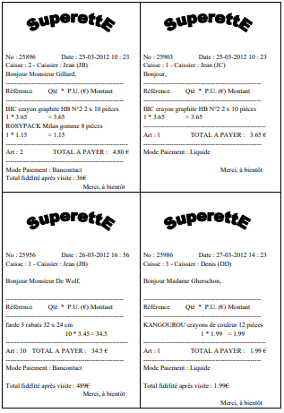
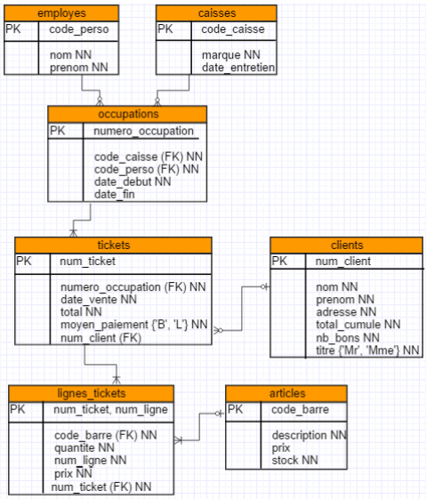
-
SELECT SUM (T.total) FROM tickets T; -
SELECT A.code_barre, A.description, SUM (L.quantite * L.prix) FROM lignes_tickets L, articles A WHERE L.code_barre = A.code_barre GROUP BY A.code_barre, A.description; -
SELECT COUNT (T.*) AS "nombre", SUM (T.total) AS "montant total" FROM tickets T WHERE T.moyen_paiement = 'L'; -
CREATE TABLE employes ( code_perso INTEGER PRIMARY KEY, nom VARCHAR (50) NOT NULL, prenom VARCHAR (50) NOT NULL ); CREATE TABLE caisses ( code_caisse INTEGER PRIMARY KEY, marque VARCHAR (50) NOT NULL, date_entretien DATE ); CREATE TABLE occupations ( num_occupation INTEGER PRIMARY KEY, code_perso INTEGER NOT NULL REFERENCES employes (code_perso), code_caisse INTEGER NOT NULL REFERENCES caisses (code_caisse), date_debut DATE NOT NULL, date_fin DATE ); CREATE TABLE clients ( num_client INTEGER PRIMARY KEY, nom VARCHAR (50) NOT NULL, prenom VARCHAR (50) NOT NNULL, adresse VARCHAR (50) NOT NULL, total_cumule INTEGER NOT NULL, nb_bons INTEGER NOT NULL, titre VARCHAR (3) NOT NULL CHECK (titre IN ('Mr', 'Mme')) ); CREATE TABLE tickets ( num_ticket INTEGER PRIMARY KEY, date_vente DATE NOT NULL, total DOUBLE PRECISION NOT NULL, moyen_paiement CHAR (1) NOT NULL CHECK (moyen_paiement IN ('L', 'B')), num_client INTEGER REFERENCES clients (num_client), num_occupation INTEGER NOT NULL REFERENCES occupations (num_occupation) ); CREATE TABLE articles ( code_barre VARCHAR (50) PRIMARY KEY, description VARCHAR (255) NOT NULL, prix DOUBLE PRECISION, stock INTEGER NOT NULL ); CREATE TABLE lignes_tickets ( code_barre VARCHAR (50) NOT NULL REFERENCES articles (code_barre), quantite INTEGER NOT NULL, num_ligne INTEGER NOT NULL, prix DOUBLE PRECISION NOT NULL, num_ticket INTEGER NOT NULL REFERENCES tickets (num_ticket), PRIMARY KEY (num_ticket, num_ligne) );
-
Europlastics :
EuroPlastics fabrique de gadgets publicitaires (porte-clefs, petits jouets pour enfants...). Elle ne fabrique que sur commande. Elle n'a aucun stock de produits finis, excepté ce qui doit être livré aux clients.
Chaque client a un numéro, un nom et une adresse. Chaque article a une description et un prix; nous ne prenons pas en compte ses autres propriétés dans cet exercice.
L'atelier comprend plusieurs machines de 1 à 8. Pour chacune d'elles, on connaît sa marque et sa date d'achat. On doit pouvoir enregistrer la date de son dernier entretien. Chaque machine est spécialisée dans la fabrication d'un certain nombre d'articles du catalogue. Cependant, un article est susceptible d'être fabriqué sur différentes machines mais le temps de fabrication varie selon la machine. Par exemple, l'article SMURF ("porte-clef Stroumpf") est fabriqué soit sur la machine 1 en 30 secondes soit sur la machine 8 en 45 secondes.
On a une relation M : N entre les tables machines etarticles. En effet, un article peut être fabriqué sur différentes machines et une machine peut fabriquer différents articles. Il faut donc une table intermédiaire qui gardera, en plus, le temps de fabrication de l'article sur la machine.
Pour une machine et un article, il ne peut exister qu'un temps de fabrication. Par exemple, si on a un tuple qui indique qu'il faut 30 secondes pour fabriquer l'article "SMURF" sur la machine n° 1, on ne peut pas avoir un autre tuple indiquant qu'il faut 45 seondes pour fabriquer l'article "SMURF" sur la machine n°1. C'est pour cette raison qu'on a choisi de mettre une clé primaire concaténée avec les colonnes num_machine et reference_article dans la table temps_fabrication. Cela permet d'être certain que, pour une machine et un article donnés, il y aura au maximum un temps de fabrication.
Les clients passent des commandes. Chaque commande reprend les informations suivantes : date de la commande, date d'échéance (date promise de livraison), la référence du client. Une commande peut concerner plusieurs articles différents. Une même commande ne peut contenir deux lignes qui concernent le même article. Pour chaque article commandé, on enregistre la quantité désirée par le client.
- Une commande ne possède aucun chap pouvant constituer la clé primaire. On a donc ajouté la colonne id_commande.
- On a choisi de garder le montant total de la commande même si ce n'est pas une obligation car on peut le retrouver grâce au prix des articles. Le montant de la commande devra de toute façon être calculé lorsque le client passe la commande et, en le gardant, cela éviter de devoir le recalculer plus tard si on en a à nouveau besoin.
- Dans la table lignes_de_commande, c'est l'exemple d'occupations des machines donné à la fin de l'énoncé qui a permis de déduire l'existence d'un numéro pour la ligne.
- Comme on ne peut pas avoir deux lignes pour le même article, on a ajouté la contrainte d'unicité sur la concaténation des champs id_commande, reference_article.
- On garde le prix unitaire de l'article dans la table lignes_de_commande car le prix de l'article qui se trouve dans la table article va varier avec le temps. Or, si le prix d'un article augmente entre le moment où un client passe la commande et le moment où il est livré, il ne faut pas que le prix augmente pour ce client, il faut aussi s'assurer du pouvoir toujours calculer son chiffre d'affaire correct et donc de garder le prix réellement payé et non le prix actuel.
Lorsque la commande a été enregistrée, il faudra effectuer chaque ligne de cette commande dans le planning. Cette opération est effectuée après l'enregistrement de la commande, en ajoutant à la ligne de commande les informations suivantes : date et heure de fabrication, et n° de machine. Lors de l'affectation, il fautévidemment vérifier que la machine puisse fabriquer l'article précisé et que la plage horaire de la machine affectée à cet article soit libre.
Une ligne de commande sera mprs de la commande dans l'état E(nregistrée); elle passera à l'état P(lanifiée) lorsque les informations du planning auront été remplies (date de fabrication, heure et n° de machine); elle passera à l'état "Clôturée" lorsqu'elle sera achevée.
Lorsque toutes les lignes d'une commande sont fabriquées, il faut faire passer la commande à l'état "Réalisée".
Pour aider la personne qui s'occupe du planning de la production, il faudrait lui fournir des listes (avec date et heure d'édition) : liste des lignes de commande non afféctées au planning, liste des occupations des machines, liste des commandes prêtes à être expédiées aux clients, etc.
Voici le dessin de la liste d'occupation des machines. Ne seront repris dans cette liste que les lignes à l'état P.
Occupation des machines : Machine N° Ligne COM Référence Article Nom-client Échéance Qté Date-heure Début Date-heure Fin 1 118 SMURF Moreau 25/6/2003 20 12/5/03 12h00 12/5/03 12h17 128 TIGRE ESSO 28/6/2003 250 12/5/03 13h00 12/5/03 15h00 Nombre d'articles : 270 2 117 SPIROU Moreau 24/6/2003 30 13/5/03 12h00 13/5/03 12h55 129 LION TEXACO 26/6/2003 450 13/5/03 14h00 13/5/03 18h00 Nombre d'articles : 480 3 116 HUITRE OSTENDE 20/6/2003 20 12/5/03 12h00 12/5/03 12h25 130 STYLO NIAS 21/6/2003 250 12/5/03 13h00 12/5/03 15h00 78 SPIROU pax 18/5/2003 100 13/5/03 8h00 13/5/03 10h10 Nombre d'articles : 370 4 115 PCLEF BMW 25/6/2003 20 12/5/03 12h00 12/5/03 12h17 134 PSTAR MERCEDES 22/6/2003 250 12/5/03 13h00 12/5/03 15h00 Nombre d'articles : 270 Vous devez :
- Dessiner le diagramme de structure de données.
- Donner le contenu des tables correspondant aux données ci-dessus.
- Écrire le(s) SELECT(s) SQL nécessaire(s) pour établie la liste "Occupation des machines" (sans les sommes représentant le nombre d'articles et le nombre total d'articles).
- Lorsque la ligne est à l'état enregistrée (etat = 'E'), la machine est la plage horaire de fabrication ne sont pas encore connues. C'est pourquoi ces champs peuvent être null.
- Le fait que la FK num_machine est à null signifie que la ligne peut ne pasêtre associée à une machine. C'est cohérent avec la requête utilisée qui indique bien qu'une ligne de commande est attribuée à 0 ou une machine.
Pour avoir le résultat de l'occupation des machines, on voit que ce qui est affiché sont des colonnes des tables lignes_de_commande (n° de machine, n° ligne, référence de l'article, quantité, date de début de fabrication, date de fin de fabrication), commandes (date d'échéance) et clients (nom du client). Il n'y a aucun calcul effectué. On peut sortir ce tableau en faisant le SELECT ci-dessous (dans lequel nous n'avons pas mis les alias pour changer les noms de colonnes) :
SELECT L.num_machine, L.num_ligne, L.reference_article, CL.nom, CMD.date_echeance, L.quantite, L.date_debut_fabrication, L.date_fin_fabrication FROM lignes_de_commandes L, commandes CMD, clients CL WHERE L.id_commande = CMD.id_commande AND CMD.num_client = CL.num_client AND L.etat = 'P' ORDER BY L.num_machine;Il est inutile de mettre un DISTINCT car on a sélectionné la clé primaire de la table lignes_de_commande. Or, comme une ligne de commandes n'appartient qu'à une et une seule commande et qu'une commande n'a qu'un et un seul client, celle-ci ne sera jamais dédoublée avec ce SELECT.
-
Le cabinet d'avocats :
On vous demande d'informatiser la gestion d'un cabinet d'avocats. Un tel cabinet rassemble plusieurs avocats qui mettent en commun des ressources et des compétences pour être plus efficaces et plus rentables. Plusieurs secrétaires travaillent dans le cabinet et assurent les nombreuses tâches administratives : classement, prises de rendez-vous, courrier, etc.
Chaque affaire (plainte, procès, mise en demeure...) d'un des clients du cabinet et donne lui à la constitution d'un dossier. Un dossier est toujours supervisé par un seul avocat. Il arrive fréquemment qu'un client ait plusieurs dossiers en cours. À l'ouverture d'un dossier, la date d'ouverture du dossier est enregistrée. Le client doit déposer une provision, qui dépend de la complexité de l'affaire ainsi que des montants en jeu. Le paiement de cette provision doit également être enregistré. Le plus souvent, un dossier a un titre et contient une brève description de l'affaire.
Certains dossiers sont "Pro Deo"; on considérera dans le cadre de cet exercice qu'il s'agit de dossiers non rémunérés (le client reçoit donc les services d'un avocat gratuitement). Les autres sont rémunérés en fonction des tâches exécutées; chaque tâche est tarifiée. Par exemple, les photocopies sont trarifiées à 0,25€ la page, la rédaction d'une lettre à 50€ la page, une consultation à 50€ la demi-heure etc.
Pour chaque dossier, il y a une série de tâches à effectuer. Une tâche concerne toujours le dossier d'un client. Elle peut parfois être introduite sans que soit précisée la personne qui va la prendre en charge. Chaque fois qu'une tâche est effectuée, la personne qui l'a exécutée note ce qu'elle a fait : une secrétaire qui a effectué 50 photocopies notera le no_dossier, la date et l'heure, son propre code (abréviation de son nom), le code de la tâche ("PHOT" pour les photocopies) et la quantité (50). La personne peut parfois rajouter un commentaire concernant son intervention.
Pour les tâches de type rendez-vous, on a besoin d'informations complémentaires : un rendez-vous d'une demi-heure le 25 mai 2004 à 14h30 dans le cadre du dossier harcèlement de Madame Spears oblige à introduire des informations sur le lieu, l'interlocuteur rencontré et le sujet de l'entretien.
Certaines tâches sont à faire dans le futur mais sont déjà introduites dans le système : lorsque la tâche a été effectuée, la personne notera le temps effectivement consacré à celle-ci et notera que la tpache a été effectuée.
On vous demande de réaliser une application dont les objectifs sont les suivants :
- Un classement efficace des informations. Cela prmet de retrouver une information urgente sur un dossier en cas d'absence prolongée d'un avocat.
- L'agenda des membres du personnel du cabinet d'avocats. Les avocats ou les secrétaires consultent chaque jour la DB pour connaître ce qu'ils ont à préparer pour les jours suivants.
- La facturation. Toutes ces tâches passées et effectuées serviront de base à la facturation. Cette facturation sera préparée et envoyée chaque mois. Le client du cabinet recevra une facture par dossier ouvert. Chaque tâche effectuée durant le mois sera clairement reprise dans la facture. Les dossiers "Pro Deo" ne seront pas facturés mais on gardera une trace de tout ce qui a été réalisé pour chacun d'eux. Notez qu'il faut s'assurer qu'une tâche n'est bien facturée qu'une seule fois.
Exemple de facture mensuelle (à titre d'information sur le contenu de celles-ci) :

On vous demande :
-
Le diagramme de structure de données :
- Les personnes (avocat et secrétaire) seront décrites à l'aide de leur nom, prénom, adresse, gsm, email et n° de registre national.
- Les clients sont identifiés par un numéro unique auto-incrémenté. Il sont décrits à l'aide de leur nom, prénom, adresse, gsm et email.
-
La rédaction des queries suivants :
- L'édition des lignes des factures du mois de janvier 2016.
- L'édition du montant à payer pour chaque facture du mois de janvier 2016. La fonction SQL permettant d'extraire le mois d'un champ est date_part ('month', nom_variable_de_type_date).
-
SELECT F.num_facture, D.num_dossier, D.num_client, F.date_facture, P.nom FROM factures F, dossiers D, personnes P WHERE F.num_dossier = D.num_dossier AND D.num_perso = P.num_perso AND date_part ('month', F.date_facture) = 1 AND date_part ('year', F.date_facture) = 2016; -
SELECT F.num_facture, F.montant_total FROM factures F WHERE date_part ('month', F.date_facture) = 1 AND date_depart ('year', date_facture) = 2016;
-
Grantano :
Une chaîne de magasins de chaussures souhaite informatiser son business afin de réaliser une application en ligne de vente de chaussures. Cette application a pour but de gérer les stocks de chaussures ainsi que les commandes.
out d'abord, les chaussurs ont été chacune catégorisées. Les catégories ont été établies mais peuvent encore évoluer. Ci-dessous, vous trouvez un premier tableau (résumé) des catégories. Chaque catégorie peut être sous-divisée en sous-catégories.
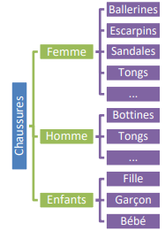Dans la catégorie Hommes - Tongs, on trouve par exemple les paires de chaussures suivantes :
- TONG SUPERBE DE LE COQ SPORTIF
- TONG SUPERBE DE GAASTRA
Une paire de chaussures appartient à une seule catégorie.
Une paire de chaussures possède un libellé comme celui mentionné ci-dessus TONG SUPERBE DE LE COQ SPORTIF. Il se peut que plusieurs paires de chaussures portent le même libellé.
Un descriptif permet, si nécessaire, d'en savoir plus sur la chaussure.
La paire de chaussures possèdent également un prix et une couleur. On enregistre si la paire est noire (N), brune (BR), bleue (BE), blanche (BL), colorée (CO). Pardois, ces prix changent, par exemple en été les bottines sont moisn chères et les tongs plus chères.
Il s'agit de gérer des commandes en ligne de chaussures. Les commandes sont effectuées par des clients pour lesquels on ne retient que le nom (inutile de créer une table clients). On retient pour chaque commande la date à laquelle elle est passée ainsi qu'un numéro unique.
Dans une commande, on peut retrouver plusieurs paires de chaussures. Par exemple, une paire de Ting pour Monsieur et une paire d'escarpin pour Madame.
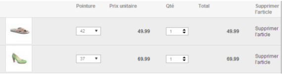Remarquez que lorsqu'un client passe commande, il doit mentionner les pointures de chaussures désirées. On vous demande de gérer le stock des paires de chaussures disponibles. Parfois, il arrive qu'une paire de chaussures soit indisponible dans une certaine pointure. Un code-barre unique identifie chaque pointure d'une paire de chaussures.
Un client peut également décider d'acheter 2 paires d'ESCARPIN LINEA LORESI en pointure 38 :
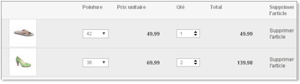L'application doit permettre, d'avoir une vision claire du stock de chaussures !
On ne connaît pas à l'avance toutes les pointures. C'est-à-dire qu'on doit pouvoir ajouter des pointures par exemple 38,5 etc.
On vous demande de :
- Réaliser le diagramme de structure de données.
- Écrire la requête qui permet de lister les chaussures (identifant + libelle, descriptif) qui ne sont pas disponibles (remarque : on doit prendre les chaussures qui ne sont pas repris dans les stocks ainsi que les chaussures pour lesquelles les quantités en stock de chaque pointure sont à zéro).
- Écrire la requête qui donne, pour chaque couple de catégories ayant le même libellé, leurs "identifiant" et le libellé.
- Écrire la requête qui permet de trouver la liste des chaussures qui ont déjà été venues à un prix suprérieur au prix actuel.

-
SELECT C.num_chaussure, C.libelle, C.descriptif FROM chaussures C WHERE C.num_chaussure NOT IN (SELECT P.chaussure FROM pointures PP WHERE p.stock > 0); -
SELECT CA1.num_categorie, CA2.num_categorie, CA1.libelle FROM categories CA1, categories CA2 WHERE CA1.libelle = CA2.libelle AND CA2.categorie < CA1.num_categorie; -
SELECT DISTINCT C.* FROM chaussures C, pointures P, lignes_commandes L WHERE C.num_chaussure = P.chaussure AND L.pointure = P.code_barre AND C.prix < L.prix_unitaire;
-
RecetteBook :
L'objectif de cette application est de permettre le partage de recettes entre amis et la gestion de commentaires à propos de ces recettes.
L'idée émane d'un groupe d'ams qui, à court d'idées certains soirs de la semaine, voudrait disposer d'un grand nombre de recettes dans lequel ils pourraient choisir celle qui leur conviendrait ce soir-là.
Pour chacun des amis, il serait nécessaire de connaître son nom, son prénom et son e-mail. Chaque e-mail doit être unique et il est nécessaire de pouvoir le changer facilement.
Pour chaque recette, le créateur, l'un des amis, introduirait le nom de celle-ci, une description de sa préparation, un temps de préparation et un temps de cuisson ainsi que le nombre de personnes pour lesquelles la recette est prévue. Cette dernière information est facultative (si non présente on considère que la recette est prévue pour 4 personnes).
Il est important de garder la trace du créateur de la recette.
Chaque recette comprend la liste des ingrédients nécessaires et leur quantité. De plus, une recette peut être composée de plusieurs autres recettes.
Par exemple, pour faire de la sauce Béchamel, il faut les ingrédients suivants :
- 50 grammes de beurre
- 50 grammes de farine
- 1/2 litre de lait tiède
- 1 pincée de sel
- 1/2 pincée de poivre
- Noix de muscade (facultative)
Pour chaque ingrédient composant la recette, il est important de noter la quantité et l'unité dans laquelle elle est exprimée.
Une recette peut également être composée de plusieurs autres recettes.
Par exemple, pour faire de la Lasagne pour 8 personnes, il faut pouvoir utiliser les recettes suivantes :
- Recette de la sauce Béchamel - 2x
- Recette de la sauce Bolognaise - 1x
- 1kg de feuilles de pâte séchées
- 200 gr de gruyère râpé
Pour chaque recette composant la recette principale, il faut noter la quantité nécessaire.
Enfin, chaque ami peut ajouter un (et un seul) commentaire à une recette.
On vous demande de :
- Réaliser le diagramme de structure de données.
- Écrire la requête qui donne la liste des recettes pour 4 personnes ayant un temps total (préparation + cuisson) inférieur à 60 minutes et utilisant des asperges comme ingrédient. Pour chaque recette, donnez son identifiant, son nom, la préparation et le temps total.
- Écrire la requête qui donne la liste des amis qui ont publiés plusieurs recettes. Pour chaque ami, donnez son identifiant, son nom et son prénom ainsi que le nombre de recettes qu'il a publiées.
- Écrire la requête qui liste les recettes (identifiant, nom) qui n'ont aucune autre recette dans leur composition.

-
SELECT R.num_recette, R.nom, R.description, (R.temps.prepa - R.temps_cuisson) AS "temps total" FROM recetes R, lignes_ingredients LI, ingredients I WHERE LI.num_recette = R.num_recette AND LI.num_ingredient = I.num_ingredient AND lower (I.nom) = 'asperge' AND (nbre_gens IS NULL OR nbre_gens = 4) GROUP BY R.num_recette, R.nom, R.description HAVING "temps total" < 60; -
SELECT A.num_ami, A.nom, A.prenom, COUNT (R.*) FROM amis A, recettes R WHERE R.createur = A.num_ami GROUP BY A.num_ami, A.nom, A.prenom; -
SELECT R.num_rectte, R.nom FROM recettes R WHERE R.num_recette NOT IN (SELECT LR.recette_composite FROM lignes_recettes LR);
-
Le distributeur de livres et DVD :
IPL-Loisirs, un distributeur de livres et de DVDs, désire informatiser la gestion de sesmembres et des achats réalisés par ceux-ci. Celui-ci fait appel à vos compétences d'analyste de données pour établir le design des données.
IPL-Loisirs offre la possibilité à ses membres d'acheter des nouveautés en livres et DVDs (dans des boutiques ou sur internet) à un prix moins cheer que dans le commerce habituel et variant en fonction de l'ancienneté du membre. En contrepartie, un membre s'engage à effectuer au moins un achat par période. Dans le cas où un membre n'aura pas effectué d'achat dans une période donnée, il devra obligatoirement acheter le livre sélectionné pour cette période, ce dernier lui étant automatiquement envoyé. Il est donc important de pouvoir retrouver les achats effectués par un membre dans une période donnée.
Lors de l'inscription, le nouveau memebre doit fournir les informations suivantes : son nom, son prénm et son adresse. S'il s'inscrit par internet, il doit également fournir un login et un mot de passe. Une fois inscrit, un membre se voit attribuer un numéro d'identification.
- Comme le nom,le prénom et l'adresse doivent être fournis au moment de l'inscription, ils ne peuvent pas être null. Contrairement au login et mot de passe qui, eux, ne sont connus que pour les membres s'étant inscrits via internet.
- Dans le deuxième paragraphe, il est inqué que les prix des livres et des DVDs vaient en fonction de l'ancienneté du membre. Il faut donc garder une information permettant de trouver cette ancienneté. C'est pour cela qu'on a également gardé la date d'inscription à partir de laquelle on peut calculer son ancienneté. Il n'aurait pas été approprié de garder simplement une colonne ancienneté car il n'aurait pas été possible de savoir quand la mettre à jour.
- Le login étant ce qui permettra au membre de s'identifier sur le site, il doit être unique. Cela n'est pas incompatible avec le fait qu'il peut être null. Il pourra quand même y avoir plusieurs membres n'ayant pas de login.
Pour chaque produit (livre ou dvd) vendu par le distributeur, il faut retenir sa référence, son prix de base et son titre. Pour chaquelivre, on connaît aussi son auteur, son nombre de pages et un résumé est parfois fourni. Pour un DVD, on connaît sa durée, son genre et l'année de sa sortie.
Ici, la structure de l'enregistrement dépend du type de produit, on a défini deux tables spécialisées en plus de la table produits qui reprend la partie commune de la structure. La colonne type n'est pas indispensable mais elle permet de ne pas devoir utiliser deux tables afin de savoir s'il s'agit d'un livre ou d'un DVD.
À chaque période correspond une date de début, une date de fin et un livre qui est la sélection liée à cete période. On ne peut pas sélectionner deux fois le même livre pour des périodes différentes.
Un livre peut être choisi comme sélection du mois au maximum une fois. Le fait de mettre la contrainte unique sur le camp "selection" garantit cela.
Pour chaque achat, il faut retenir le membre qui l'a effectué, la période pendant laquelle il a été effectuée, le détail des produits achetés et le type de paiement parmi les suivants : en liquide, par Bancontact, par virement ou par carte de crédit. Une fois que le paiement aura été effectué, il faut aussi garder la date du paiement.
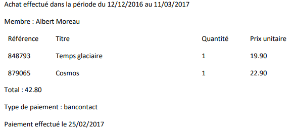
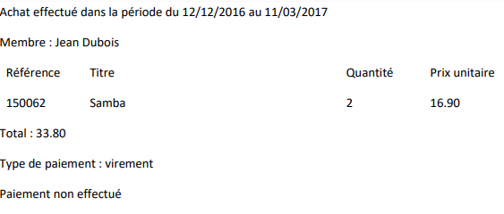
On vous demande :
-
De réaliser le diagramme de structure de données.
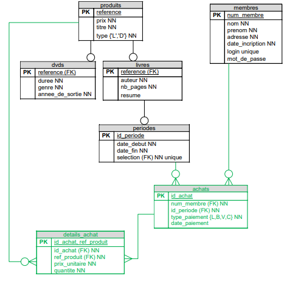- Le paiement peut se faire après l'achat. Par conséquent, la date de paiement pourrait se situer en dehors de la période où l'achat a été réalisé et ne peut donc pas servir à retrouver la périoe de l'achat.
- On aurait éventuellement pu garder la date d'achat pour retrouver la période de l'achat mais la requête à faire pour retrouver la période dans ce cas aurait été plus difficile et sans doute moins efficace.
- Un achat peut contenir 1 ou plusieurs produits et un produit peut être acheté 0, 1 ou plusieurs fois. C'est une relation M : N qui nécessite une table intermédiaire. Dans cette table, on a ajouté le prix unitaire et la quantité comme montré l'exemple. On est obligé de garder le prix unitaire car le prix payé lors de l'achat ne correspond pas nécessairement au prix de base (le prix payé dépend de l'ancienneté et, de plus, les prix des produits varient avec le temps).
-
D'écrire les requêtes suivantes :
-
Donner la liste des livres (référence, titre, auteur) ayant déjà été sélectionnés pour une période.
Il suffit de prendre les livres dont l'identifiant se situe dans la table periodes. Les informations dont on a besoin se situent dans les tables produits et livres. Comme l'identifiant du livre se trouve au plus une fois dans la table periodes, il est inutile de mettre de DISTINCT.
SELECT L.reference, P.titre, L.auteur FROM livres L, produits P, periodes PER WHERE L.reference = P.reference AND L.reference = PER.selection; -
Donner, pour chaque achat, le nom et le numéro du membre l'ayant effectué, la période pendant laquelle il a été effectué, la date du paiement et le montant total de l'achat. Classez le tout par période et, pour les achats effectués lors d'une même période, classez-les par numéro de client.
- Comme le montant total de l'achat n'a pas été gardé dans la table achats, il faut le recalculer. Pour cela, il faut faire la somme des prix des produits achetés. On trouve les informations à ce sujet dans la table details_achat. Il ne faut pas oublier de prendre en compte la quantité achetée lors du cal c'est-à-dire que le montant correspondant à un détail est égal à quantite * prix_unitaire.
- Comme on a une fonction agrégée et d'autres colonne, il ne faut pas oublier de mettre un GROUP BY reprenant au moins toutes les colonnes affichées qui ne se trouvent pas dans la fonction agrégée.
- Pour classer les achats dans l'ordre voulu, il faut utiliser un ORDER BY. Pour rappel, l'ORDER BY se situe toujours en dernier dans une requête.
SELECT A.id_achat, M.nom, M.num_membre, P.id_periode, P.date_debut, P.date_fin, A.date_paiement, SUM (D.prix_unitaire * D.quantite) AS "montant total" FROM membres M, periodes P, achats A, details_achat D WHERE M.num_membre = A.num_membre AND P.id_periode = A.id_periode AND A.id_achat = D.id_achat GROUP BY A.id_achat, M.nom, M.id_membre, P.id_periode, P.date_periode, P.date_debut, P.date_fin, A.date_paiement ORDER BY P.id_periode, M.num_membre; -
Donner la liste des membres (numéro "nom") n'ayant effectué aucun achat lors de la période du 12/12/2016 au 11/03/2017.
- Ici, il faut trouver les membres pour lesquels il n'y a pas de tuple dans la table achats correspondant à la période donnée. On ne peut pas le faire par jointure puisqu'on cherche précisément ceux qui seront éliminés lorsqu'on fait la jointure. On est obligé de passer par un sous-select qui va nous donner les identiants des membres qui ont bien effectué un achat dans la période demande. Ensuite,on va prendre tous les membres dont l'identifiant n'est pas parmi ceux (NOT IN) renvoyés par le sous-select.
- Il est inutile de mettre un DISTINCT puisqu'on ne prend que la table membres dans le FROM "principal" et que la clé primaire de cette table est prise dans le SELECT.
- Il n'est pas utile de mettre un DISTINCT dans le sous-select car le résultat ne sert que pour faire des comparaisons.
SELECT m.num_membre, M.nom FROM membres M WHERE m.num_membre NOT IN (SELECT A.num_membre FROM achats A, periodes P WHERE A.id_periode = P.id_periode AND P.date_debut = '12/12/2016' AND P.date_fin = '11/03/2017');
-